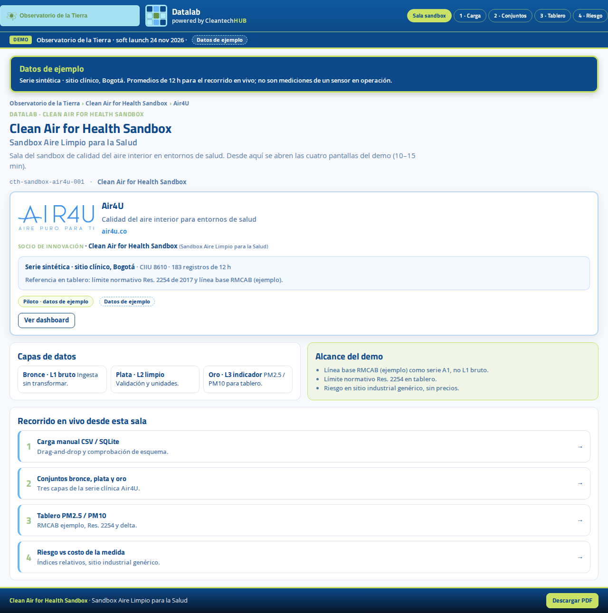
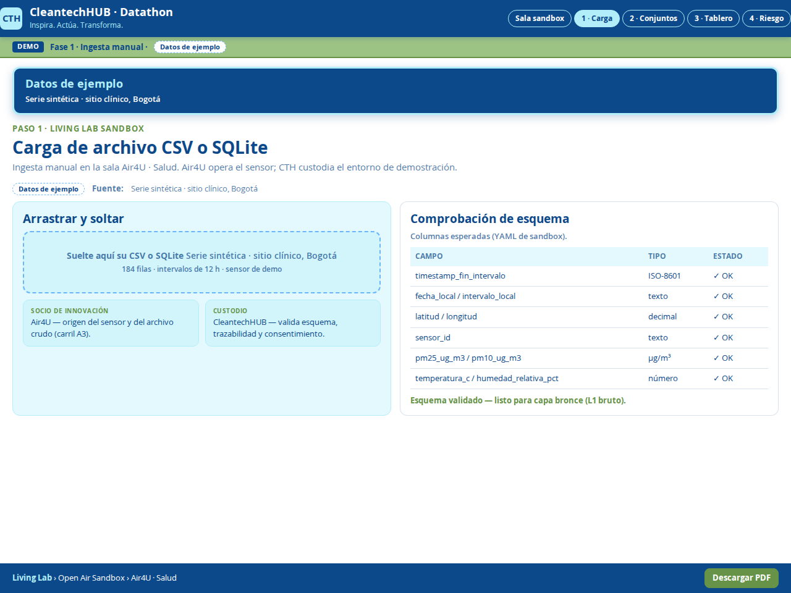
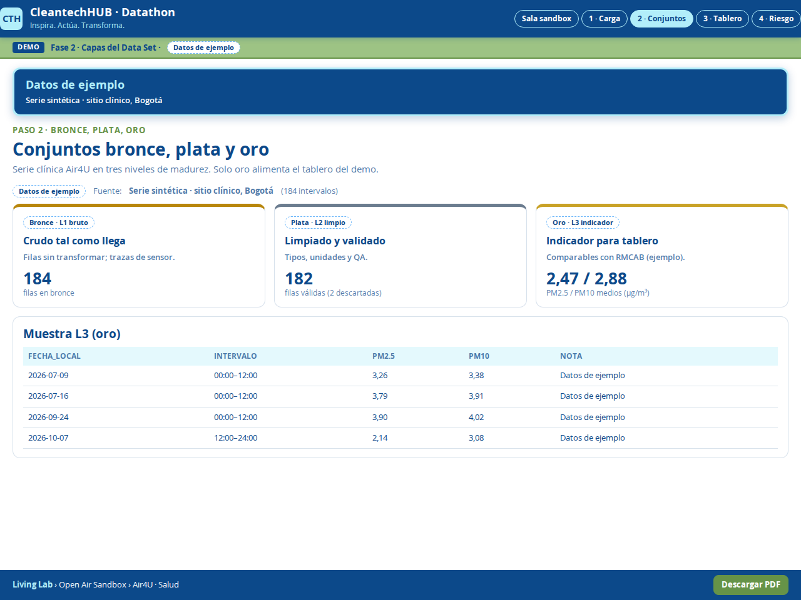
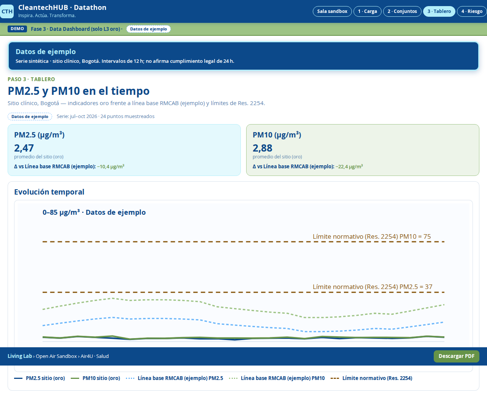
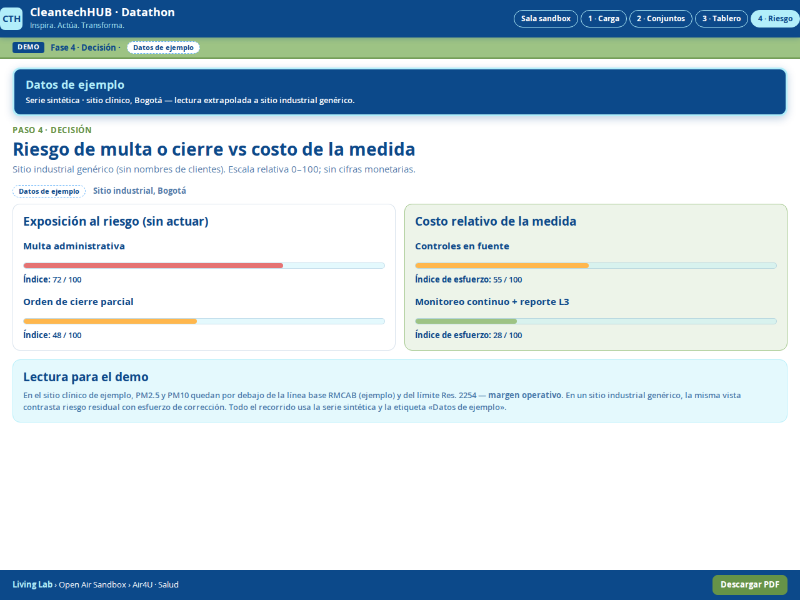
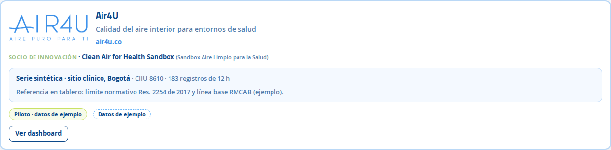

Modelo steward
Un steward custodia el sandbox, define acceso y mantiene trazabilidad. Los socios aportan casos, datos permitidos y retroalimentación sin perder soberanía sobre lo sensible.
Consorcio abierto · Datalab
Espacio de innovación con modelo steward: la comunidad comparte datos y herramientas bajo reglas claras. Datalab es el motor de datos bajo la lente Tecnológica del Observatorio de la Tierra en la Universidad Externado de Colombia.
Un steward custodia el sandbox, define acceso y mantiene trazabilidad. Los socios aportan casos, datos permitidos y retroalimentación sin perder soberanía sobre lo sensible.
Infraestructura de datos, entornos de prueba y gobernanza técnica para pasar de exploración a decisiones. Co-branding visible: Datalab powered by CleantechHUB.
Clean Air for Health Sandbox · Sandbox Aire Limpio para la Salud
Primer caso activo en Open Air Sandbox: visualización de calidad del aire, cargas de datos y tableros de riesgo para salud pública y equipos técnicos.






Open Air Sandbox conecta sensores, datos abiertos y equipos multidisciplinarios. Las vistas siguientes son material de demostración del entorno Datalab (datos de ejemplo donde aplique).